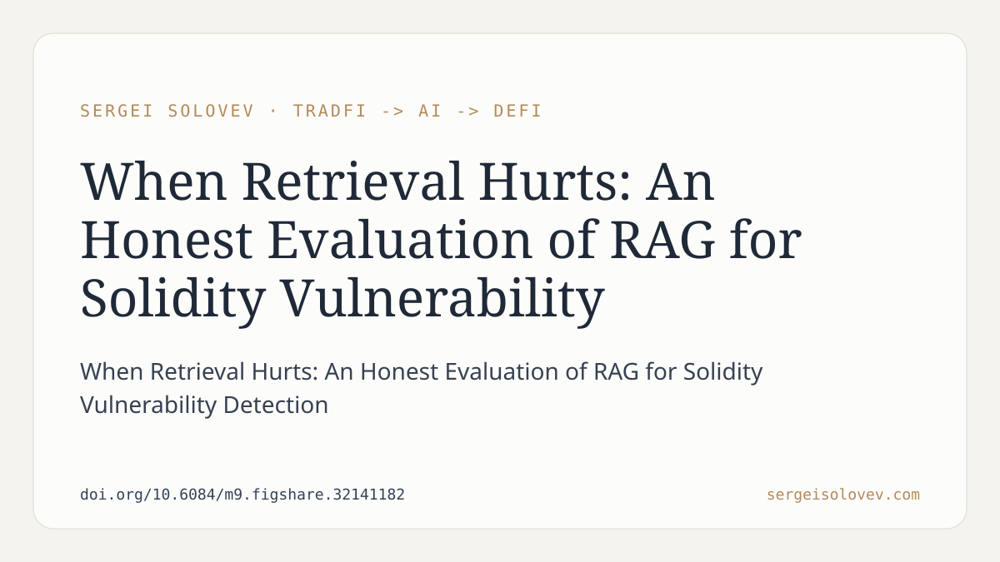

A question worth asking before deploying RAG in any security-critical pipeline: how sensitive are your reported gains to evaluation set size?
We tested three configurations — heuristic-only, LLM-only, and LLM+RAG — on the SolidiFI benchmark across six Solidity vulnerability classes. On a 100-sample evaluation, RAG showed a +2.0% Macro-F1 improvement over plain LLM, consistent with what is commonly reported in the literature. On 250 samples, the same configuration degraded Macro-F1 by -2.7%. The apparent gain vanishes and reverses once the evaluation is robust enough to detect it.
What did hold up: careful heuristic tuning and prompt engineering delivered +15% F1 over a heuristic-only baseline — a result that remains stable across sample sizes. The mechanism behind RAG's failure is generic embeddings combined with whole-contract chunking, which produce a retrieval signal too noisy for the LLM classifier to absorb usefully.
This has a direct practical implication: teams reaching for RAG to improve smart contract auditing tools may be measuring gains that do not survive a larger test set. Domain-adapted retrieval — fine-tuned embeddings, cross-encoder re-ranking, AST-aware chunking — is still an open direction that could change this picture, but off-the-shelf RAG, applied naively, adds no measurable value here and can actively hurt.
Full paper: https://doi.org/10.6084/m9.figshare.32141182
#RAG #SmartContracts #ML